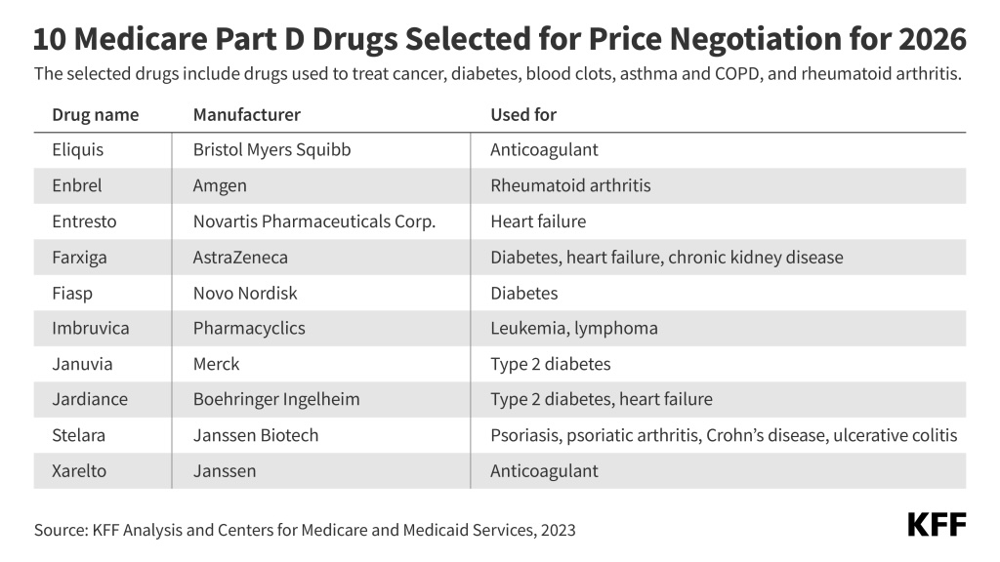
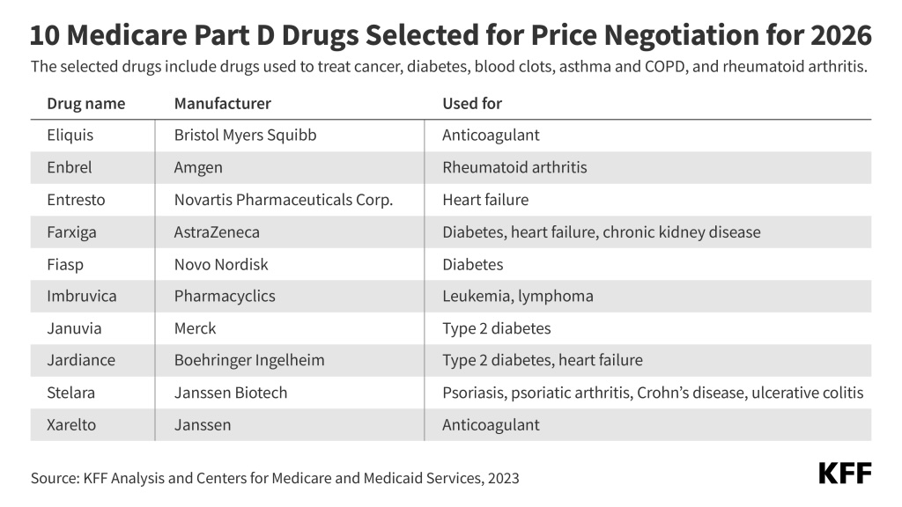
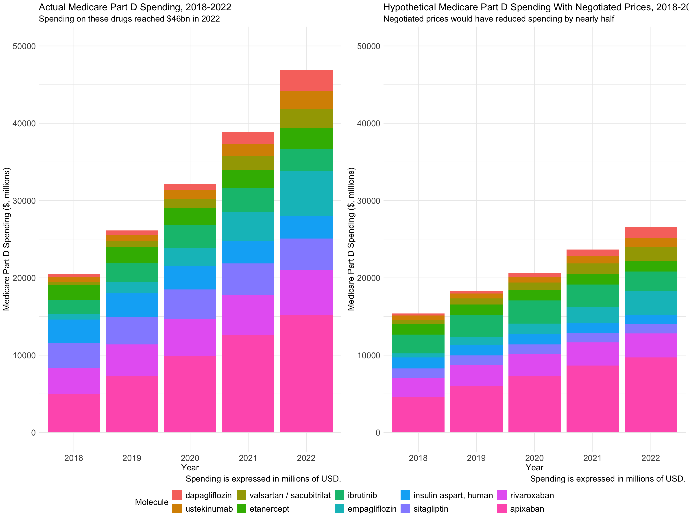
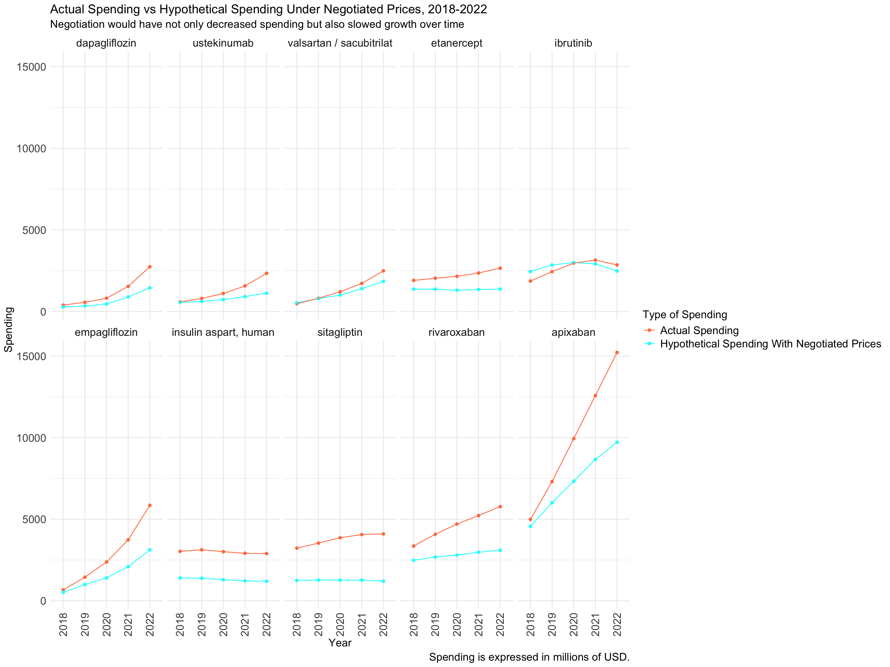

#display image of table from Kaiser Family Foundation with information about the ten drugs
knitr::include_graphics("medicaredrugsinfo.jpeg")
An example data analysis can be found below.
Under the Inflation Reduction Act of 2022, Medicare is allowed to negotiate the prices of certain drugs with high spending. In the first year of the negotiation program, Medicare was permitted to negotiate the prices of 10 Part D drugs with high budget impact.
This analysis estimates what the annual spending on these ten drugs would have been between 2018-2022 if the new negotiated prices had been implemented during those years. The intended audience for this analysis is health policy researchers, policymakers, and members of the public who are interested in understanding the magnitude of the effect of negotiated prices on Medicare Part D drug spending for negotiated drugs.
The analysis uses Medicare Part D Dashboard data@dashboard2024 and the negotiated prices for the first ten Part D drugs selected for negotiation@negotiation2024. Data dictionaries for the Medicare Part D dashabord data can be found here (https://data.cms.gov/resources/medicare-part-d-spending-by-drug-data-dictionary) and for the drug price dataset can be downloaded from here (https://www.cms.gov/inflation-reduction-act-and-medicare/medicare-drug-price-negotiation).
#display image of table from Kaiser Family Foundation with information about the ten drugs
knitr::include_graphics("medicaredrugsinfo.jpeg")
Image accessed from: https://www.kff.org/affordable-care-act/press-release/3-charts-about-medicare-drug-price-negotiations/
Actually, yes! These ten drugs accounted for approximately 20% of total Part D spending in 2023.@aspe2024
── Attaching core tidyverse packages ──────────────────────── tidyverse 2.0.0 ──
✔ dplyr 1.1.4 ✔ readr 2.1.5
✔ forcats 1.0.0 ✔ stringr 1.5.1
✔ ggplot2 3.5.1 ✔ tibble 3.2.1
✔ lubridate 1.9.3 ✔ tidyr 1.3.1
✔ purrr 1.0.2
── Conflicts ────────────────────────────────────────── tidyverse_conflicts() ──
✖ dplyr::filter() masks stats::filter()
✖ dplyr::lag() masks stats::lag()
ℹ Use the conflicted package (<http://conflicted.r-lib.org/>) to force all conflicts to become errorslibrary(languageserver)
library(ggpubr)
#set working directory
setwd("/Users/ilinaodouard/Library/CloudStorage/OneDrive-JohnsHopkins/08 PhD/06 Second Term 2024-25/02 Statistical Programming Paradigms and Workflows/03_Projects/biostat777-intro-ilina-odouard/website")
#read in data files
drugprices <- read_csv("negotiatedprices.csv")Rows: 141 Columns: 14
── Column specification ────────────────────────────────────────────────────────
Delimiter: ","
chr (11): Selected Drug Name, Active Ingredient Name or Active Moiety Name, ...
dbl (1): IPAY
lgl (2): XREF NDC-11, MFP End Date
ℹ Use `spec()` to retrieve the full column specification for this data.
ℹ Specify the column types or set `show_col_types = FALSE` to quiet this message.Rows: 13889 Columns: 18
── Column specification ────────────────────────────────────────────────────────
Delimiter: ","
chr (3): Brnd_Name, Gnrc_Name, Mftr_Name
dbl (15): Tot_Spndng_2018, Tot_Clms_2018, Tot_Benes_2018, Tot_Spndng_2019, T...
ℹ Use `spec()` to retrieve the full column specification for this data.
ℹ Specify the column types or set `show_col_types = FALSE` to quiet this message.#select and rename variables
drugprices <- drugprices %>%
select(`Selected Drug Name`, `Active Ingredient Name or Active Moiety Name`, `Single MFP per 30 DES`) %>%
rename(brand = `Selected Drug Name`,
molecule = `Active Ingredient Name or Active Moiety Name`,
price30d = `Single MFP per 30 DES`) %>%
distinct()
#change price variable to numeric
drugprices <- drugprices %>%
mutate(price30d = as.numeric(str_remove_all(price30d, "[$,]")))
#change drug name variable to lowercase
drugprices <- drugprices %>%
mutate(brand = tolower(brand),
molecule = tolower(molecule))
head(drugprices)# A tibble: 6 × 3
brand molecule price30d
<chr> <chr> <dbl>
1 eliquis apixaban 231
2 enbrel etanercept 2355
3 entresto valsartan / sacubitrilat 295
4 farxiga dapagliflozin 178.
5 imbruvica ibrutinib 9319
6 januvia sitagliptin 113 #rename variables, arrange in tidy format
spending <- spending %>%
select(Brnd_Name, Gnrc_Name, Mftr_Name, starts_with("Tot_Spndng_"), starts_with("Tot_Benes_")) %>%
rename(brand = Brnd_Name,
molecule = Gnrc_Name) %>%
pivot_longer(cols = starts_with(c("Tot_Spndng_", "Tot_Benes_")),
names_to = "item",
values_to = "amount") %>%
mutate(year = str_extract(item, ".{4}$")) %>%
mutate(item = ifelse(str_detect(item, "Spndng"), "spending", "benes")) %>%
pivot_wider(names_from = "item",
values_from = "amount")
#change brand and molecule names to lowercase
spending <- spending %>%
mutate(brand = tolower(brand),
molecule = tolower(molecule))
#adjust some molecule names to ensure match with drug price data
spending <- spending %>%
mutate(molecule = ifelse(str_detect(molecule, "dapagliflozin"), "dapagliflozin", molecule)) %>%
mutate(molecule = ifelse(brand=="entresto", "valsartan / sacubitrilat", molecule)) %>%
mutate(molecule = ifelse(str_detect(brand, regex("^(novolog|fiasp)", ignore_case = TRUE)), "insulin aspart, human", molecule)) %>%
mutate(molecule = ifelse(brand=="januvia", "sitagliptin", molecule))
head(spending) # A tibble: 6 × 6
brand molecule Mftr_Name year spending benes
<chr> <chr> <chr> <chr> <dbl> <dbl>
1 1st tier unifine pentips pen needle, diabetic Overall 2018 167194. 2341
2 1st tier unifine pentips pen needle, diabetic Overall 2019 139202. 1878
3 1st tier unifine pentips pen needle, diabetic Overall 2020 118923. 1595
4 1st tier unifine pentips pen needle, diabetic Overall 2021 102281. 1313
5 1st tier unifine pentips pen needle, diabetic Overall 2022 70040. 1147
6 1st tier unifine pentips pen needle, diabetic Owen Mumfo… 2018 167194. 2341# A tibble: 6 × 8
brand.x molecule price30d brand.y Mftr_Name year spending benes
<chr> <chr> <dbl> <chr> <chr> <chr> <dbl> <dbl>
1 eliquis apixaban 231 eliquis Overall 2018 4991812972. 1646681
2 eliquis apixaban 231 eliquis Overall 2019 7304981235. 2168489
3 eliquis apixaban 231 eliquis Overall 2020 9936069814. 2641941
4 eliquis apixaban 231 eliquis Overall 2021 12575145852 3125087
5 eliquis apixaban 231 eliquis Overall 2022 15219812294 3505142
6 eliquis apixaban 231 eliquis BMS Primarycare 2018 4991812972. 1646681I used left_join to join the drug price and spending datasets. This way, only the information on the ten relevant drugs from the spending dataset are retained.
#make 1 row per drug-year
data <- data %>%
filter(Mftr_Name=="Overall") %>%
select(molecule, year, price30d, spending, benes) %>%
group_by(molecule, year, price30d) %>%
reframe(spending = sum(spending, na.rm = TRUE), benes = sum(benes, na.rm = TRUE))
#new variables: estimated annual cost using new prices, estimated total spending, percent change in spending
data <- data %>%
mutate(annual_cost = 12*price30d) %>%
mutate(est_spending = annual_cost*benes) %>%
mutate(perc_diff = ((est_spending - spending)/spending)*100)
#express spending in millions
data <- data %>%
mutate(spending = round(spending/1000000, digits=1),
est_spending = round(est_spending/1000000, digits=1))
#view the dataset
data# A tibble: 50 × 8
molecule year price30d spending benes annual_cost est_spending perc_diff
<chr> <chr> <dbl> <dbl> <dbl> <dbl> <dbl> <dbl>
1 apixaban 2018 231 4992. 1.65e6 2772 4565. -8.56
2 apixaban 2019 231 7305 2.17e6 2772 6011. -17.7
3 apixaban 2020 231 9936. 2.64e6 2772 7324. -26.3
4 apixaban 2021 231 12575. 3.13e6 2772 8663. -31.1
5 apixaban 2022 231 15220. 3.51e6 2772 9716. -36.2
6 dapagliflo… 2018 178. 391. 1.27e5 2142 272. -30.4
7 dapagliflo… 2019 178. 562. 1.56e5 2142 335. -40.4
8 dapagliflo… 2020 178. 813. 2.14e5 2142 459. -43.5
9 dapagliflo… 2021 178. 1538 4.15e5 2142 890. -42.1
10 dapagliflo… 2022 178. 2740. 6.75e5 2142 1446. -47.2
# ℹ 40 more rows# A tibble: 5 × 2
year tot_spend
<chr> <dbl>
1 2018 20501.
2 2019 26138.
3 2020 32130.
4 2021 38842.
5 2022 46917.#turn off scientific notation
options(scipen = 999)
#make molecule a factor variable
data$molecule = factor(data$molecule)
data$molecule = fct_reorder(data$molecule, data$spending, .fun = mean)
levels(data$molecule) [1] "dapagliflozin" "ustekinumab"
[3] "valsartan / sacubitrilat" "etanercept"
[5] "ibrutinib" "empagliflozin"
[7] "insulin aspart, human" "sitagliptin"
[9] "rivaroxaban" "apixaban" #actual spending
a <- data %>%
ggplot(aes(x=year, y=spending, fill = molecule)) +
geom_bar(position="stack", stat="identity") +
theme_minimal() +
theme(
plot.title = element_text(size = 16),
plot.subtitle = element_text(size = 14),
plot.caption = element_text(size = 14),
axis.title = element_text(size = 14),
axis.text = element_text(size = 14),
legend.title = element_text(size = 14),
legend.text = element_text(size = 14)
) +
labs(title = "Actual Medicare Part D Spending, 2018-2022",
subtitle = "Spending on these drugs reached $46bn in 2022",
x = "Year",
y = "Medicare Part D Spending ($, millions)",
caption = "Spending is expressed in millions of USD.",
fill = "Molecule") +
ylim(0, 50000)
#estimated spending with negotiated prices
b <- data %>%
ggplot(aes(x=year, y=est_spending, fill = molecule)) +
geom_bar(position="stack", stat="identity") +
theme_minimal() +
theme(
plot.title = element_text(size = 16),
plot.subtitle = element_text(size = 14),
plot.caption = element_text(size = 14),
axis.title = element_text(size = 14),
axis.text = element_text(size = 14),
legend.title = element_text(size = 14),
legend.text = element_text(size = 14)
) +
labs(title = "Hypothetical Medicare Part D Spending With Negotiated Prices, 2018-2022",
subtitle = "Negotiated prices would have reduced spending by nearly half",
x = "Year",
y = "Medicare Part D Spending ($, millions)",
caption = "Spending is expressed in millions of USD.",
fill = "Molecule") +
ylim(0, 50000)
ggarrange(a, b, nrow=1, common.legend = TRUE, legend = "bottom")
data %>%
pivot_longer(cols = contains("spending"), names_to = "spending_type", values_to = "spend") %>%
ggplot(aes(x=year, y=spend, color=spending_type, group=spending_type)) +
geom_point() + geom_line() +
facet_wrap(. ~ molecule, nrow = 2) +
theme_minimal() +
theme(
plot.title = element_text(size = 16),
plot.subtitle = element_text(size = 14),
plot.caption = element_text(size = 14),
axis.title = element_text(size = 14),
axis.text = element_text(size = 14),
strip.text = element_text(size = 14),
legend.title = element_text(size = 14),
legend.text = element_text(size = 14),
axis.text.x = element_text(angle = 90, vjust = 0.5, hjust = 1)
) +
labs(title = "Actual Spending vs Hypothetical Spending Under Negotiated Prices, 2018-2022",
subtitle = "Negotiation would have not only decreased spending but also slowed growth over time",
x = "Year",
y = "Spending",
caption = "Spending is expressed in millions of USD.") +
scale_color_manual(name = "Type of Spending",
values = c("spending" = "coral", "est_spending" = "cyan"),
breaks = c("spending", "est_spending"),
labels = c("Actual Spending", "Hypothetical Spending With Negotiated Prices"))
data %>%
filter(year=="2022") %>%
ggplot(aes(x = fct_reorder(molecule, perc_diff, .desc=TRUE), y = perc_diff)) +
geom_bar(position="dodge", stat="identity", fill = "coral") +
coord_flip() +
theme_minimal() +
theme(
plot.title = element_text(size = 16),
plot.subtitle = element_text(size = 14),
plot.caption = element_text(size = 14),
axis.title = element_text(size = 14),
axis.text = element_text(size = 14),
) +
labs(title = "Hypothetical Percent Change in Spending in 2022 With Negotiated Prices",
subtitle = "The change in spending would have varied by drug from -13% to -70%",
x = "Drug",
y = "Percent Difference in Spending") This analysis demonstrated how negotiated drug prices would have impacted Medicare Part D spending on the ten drugs selected for the first round of negotiation. While spending would have continued to grow year-over-year due to increasing utilization, the negotiated prices would have reduced total spending on these drugs by nearly 50%. Apixaban, a drug treating blood clots, is the most influential in the total spending as it reached over $15 billion in spending in 2022. This would have been cut down to $9.7 billion if the negotiated prices had been implemented at the time. Comparing actual spending to hypothetical spending under the negotiated prices during these years, we can see some variation by drug. In 2022, the difference in spending would have ranged from -13% to -70% depending on the drug. The limitation of this analysis is that utilization in 2018-2022 may not be representative of utilization of these drugs in 2026 and beyond (when the prices are implemented).
dplyr: select(), filter(), group_by(), mutate(), summarize(), reframe()
tidyr: pivot_longer(), pivot_wider()
ggplot2: ggplot(), geom_bar(), geom_line(), geom_point()
facet_wrap()